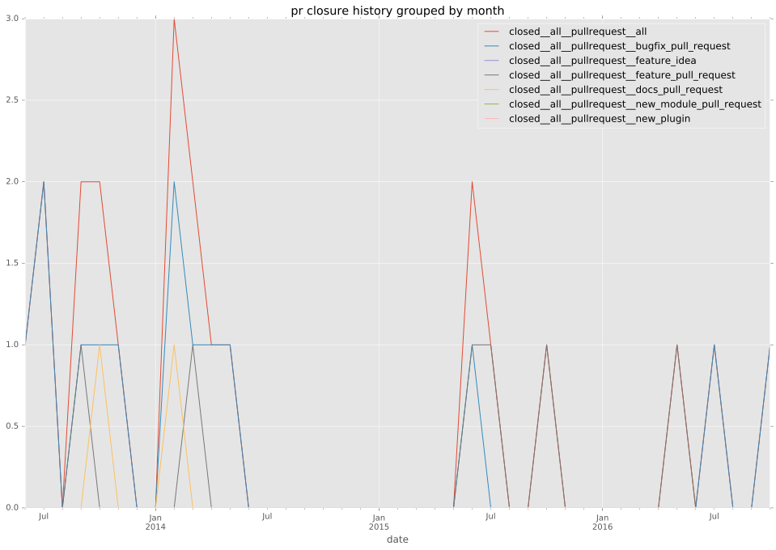
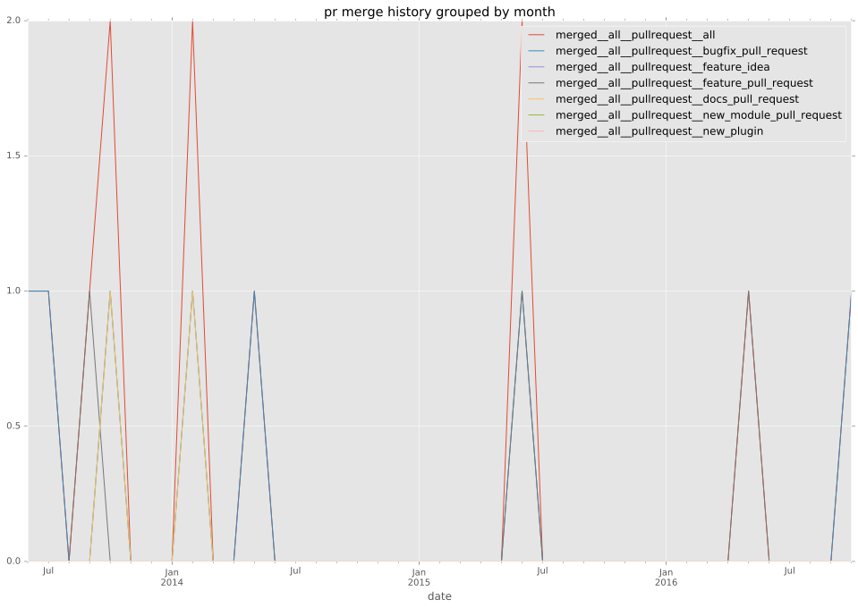
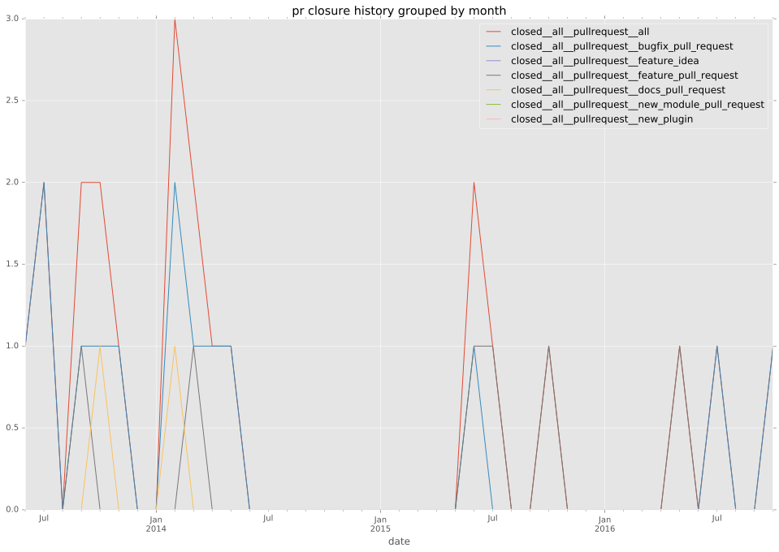
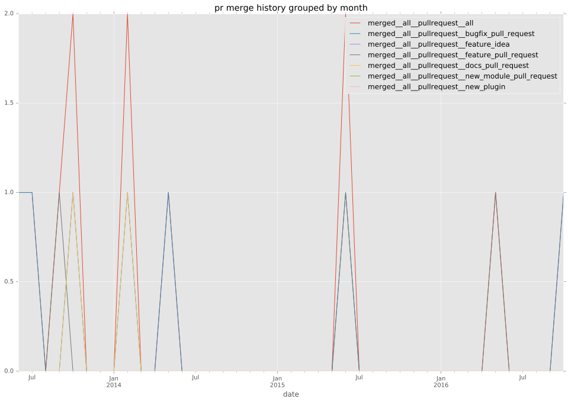
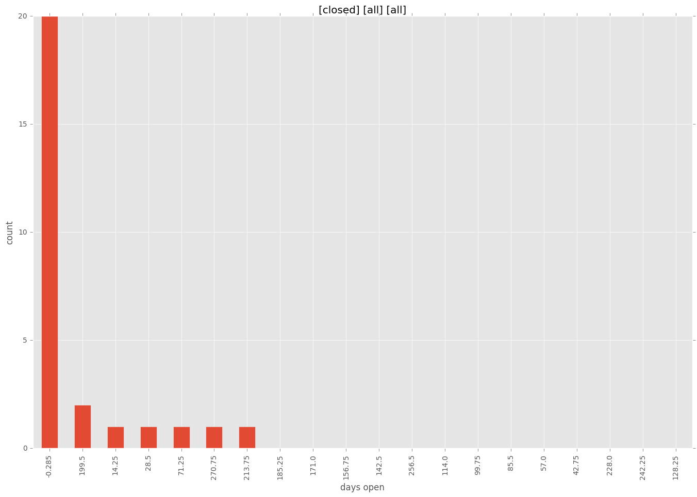
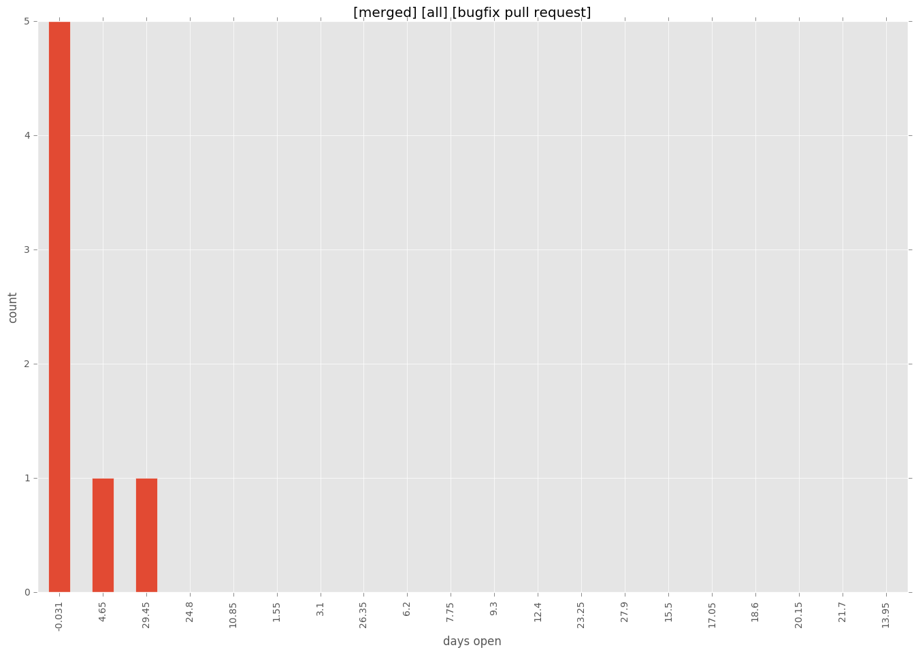
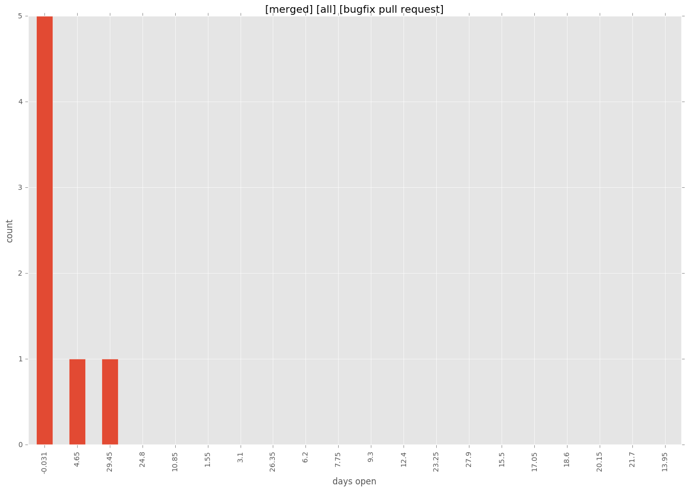

authors
maintainers
- ansible
contributors
- lorin : 27 commits
- alexkingnz : 9 commits
- stoned : 8 commits
- mpdehaan : 8 commits
- abadger : 6 commits
- Jell : 6 commits
- Jmainguy : 4 commits
- mxxcon : 2 commits
- mscherer : 2 commits
- bcoca : 2 commits
- risaacson : 1 commits
- jimi-c : 1 commits
- jctanner : 1 commits
total issue counts
bugfix pull request: 13
pullrequest: 21
docs pull request: 2
feature pull request: 6
feature idea: 1
issue: 8
bug report: 7
issue history

pullrequest history
 



days open by issue type
feature pull request
count: 8
std: 105.841863173
min: 0
max: 228
median: 20.0
mean: 84.25
all
count: 39
std: 76.2999178433
min: 0
max: 285
median: 1.0
mean: 34.8205128205
pullrequest
count: 0
std: nan
min: nan
max: nan
median: nan
mean: nan
docs pull request
count: 4
std: 5.19615242271
min: 4
max: 13
median: 8.5
mean: 8.5
bugfix pull request
count: 20
std: 9.42895875258
min: 0
max: 31
median: 0.0
mean: 3.8
feature idea
count: 0
std: nan
min: nan
max: nan
median: nan
mean: nan
issue
count: 0
std: nan
min: nan
max: nan
median: nan
mean: nan
bug report
count: 7
std: 118.245507314
min: 0
max: 285
median: 3.0
mean: 82.0
closures grouped by total days open



 
